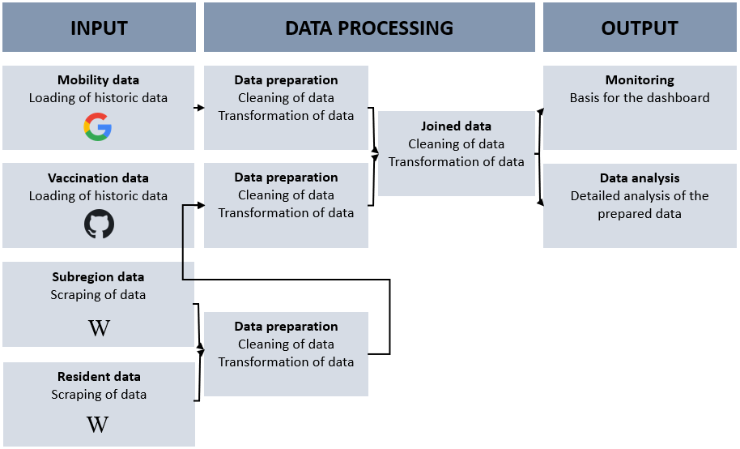

Datenintegration
Nadja Herrmann
2 Konzeptionelles Vorgehen
Das Ziel dieses Projekts ist es die Daten zu analysieren sowie ein Dashboard zum Monitoring für das Impfen zu erstellen. Das Vorgehen ist wie in der Abbildung 1 beschrieben. Die Daten liegen in unterschiedlichen Quellen zur Verfügung. Google stellt die Mobilitätsdaten als .csv bereit. Die Impfdaten werden von dem Projekt “Digitales Impfquoten-Monitoring” (DIM) in GitHub zur Verfügung gestellt und stehen somit auch als .csv zur Verfügung.
Um mit den Daten arbeiten zu können, müssen diese im weiteren Vorgehen zusammengeführt werden. Hierzu benötigt es weitere Daten. Diese Daten werden von unterschiedlichen Wikipedia Seiten gescraped. Sobald alle Daten vorliegen werden diese in das Notebook geladen, überprüft und zur weiteren Verarbeitung bereinigt und vorbereitet.

Abbildung 1: Konzeptionelles Vorgehen, Eigene Darstellung 2021
3 Notwendige Pakete laden
Die folgenden Pakete werden für dieses Notebook benötigt:
library(tidyverse)
library(ggplot2) #Visualisierung
library(rvest) #Web scraping
library(robotstxt)4 Datenbeschaffung und Beschreibung
4.1 Mobilitätsdaten (Datensatz 1)
Google liefert mit dem Datensatz „Mobilitätsbericht“ Informationen dazu, was sich durch die Regelungen zur Bekämpfung der Coronakrise hinsichtlich dem Mobilitätsaufkommen geändert hat. In den Mobilitätsberichten werden Bewegungstrends nach Region (Bundesland) für verschiedene Kategorien dargestellt. Sie zeigen Änderungen für jede Kategorie in einer Region auf. Es wird die Mobilität am Tag des Berichts mit der des Referenztags verglichen und die Veränderung wird in Prozent aufgezeigt. Ein Referenztag repräsentiert einen normalen Wert für den entsprechenden Wochentag. Der Referenztag ist der Medianwert der fünf Wochen vom 3. Januar bis 6. Februar 2020. Alle Mobilitätsberichte sind nach Orten aufgeschlüsselt und zeigen, wie sich die Zahl der Besuche an Orten wie zum Beispiel Lebensmittelgeschäften und Parks verändert hat. Die Daten von Google stehen unter dem folgenden Link zur Verfügung.
4.1.1 Beschreibung der Variablen
| Variable | Beschreibung |
|---|---|
| Country region code | ISO Code |
| Country region | Land |
| sub_region_1 | Bundesland |
| sub_region_2 | Bundesland Zusatz |
| metro_area | Keine Einträge |
| iso_3166_2_code | Keine Einträge |
| census_fips_code | Keine Einträge |
| place_id | tbd |
| date | Datum |
| retail_and_recreation | Einzelhandel und Erholung |
| grocery_and_pharmacy | Lebensmittel und Apotheken |
| parks | Park (z.B.: Öffentlicher Park, Schloss, Waldgebiete |
| transit_stations | Transitstationen |
| workplaces | Arbeitsstätten |
| residential | Haus und Wohnungen |
4.2 Impfdaten (Datensatz 2)
Die COVID-19-Impfung kann einen Wendepunkt in der Kontrolle der COVID-19-Pandemie darstellen und erfährt daher hohes Maß an öffentlicher Aufmerksamkeit. Einführung und Umsetzung der COVID-19-Impfung gehen mit besonderen Herausforderungen einher, die bei der Impfdatenerfassung zu berücksichtigen sind.
In diesem Kontext ist es Ziel des Projekts “Digitales Impfquoten-Monitoring” (DIM), tagesaktuell und bundesweit die Impfquote zu erfassen und aufbereitet darzustellen. Die Daten stehen unter dem folgenden Link zur Verfügung.
4.2.1 Beschreibung der Variablen
| Variable | Beschreibung |
|---|---|
| Impfdatum | Impfdatum |
| BundeslandID_Impfort | ID 1-16 |
| Impfstoff | Name Impfstoff |
| Impfserie | Serie der Impfung |
| Anzahl | Anzahl Geimpfte Personen |
4.3 Bundesland_ID (Anreicherung der Daten)
Da in dem Datensatz der Mobilitätsdaten das Bundesland gegeben ist und in dem Datensatz der Impfdaten lediglich die Bundesland ID gegeben ist, wird zur Zusammenführung dieser beider Datensätze eine Anreicherung der Daten benötigt. Diese Anreicherung ist die Zuordnung der ID zum Bundesland. Die Daten stehen unter dem folgenden Link zur Verfügung: Link.
4.3.1 Beschreibung der Variablen
| Variable | Beschreibung |
|---|---|
| ID | ID 1-16 |
| Bundesland | Name Bundesland |
4.3.2 Webscraping Länderschlüssel
In diesem Abschnitt wird die Bundesland ID mit Hilfe von Webscraping aus Wikipedia extrahiert. Es gibt eine eigene Wikipediaseite für amtliche Gemeindeschlüssel. Hier befindet sich in der ersten Tabelle die aktuellen Länderschlüssel mit den jeweiligen Bundesländern (Abbildung 2).
Abbildung 2: Amtliche Länderschlüssel, Wikipedia 2021
Zuerst wird mit der Funktion paths_allowed überprüft ob Informationen der Seite gescraped werden dürfen.
paths_allowed("de.wikipedia.org")## [1] TRUEDer nächste Schritt ist die Zuweisung der URL und die Identifikation des XPaths. Hierzu wird die Tabelle auf der Seite untersucht.
url = "https://de.wikipedia.org/wiki/Amtlicher_Gemeindeschl%C3%BCssel"Im weiteren Vorgehen wird die Extraktionsfunktion definiert, der gescrapte Inhalt als tibble abgelegt und entsprechend der Variablennamen angepasst.
scraping <- url %>%
read_html() %>%
html_node(xpath = '//*[@id="mw-content-text"]/div[1]/table/tbody/tr/td[1]/table') %>%
html_table(fill = TRUE)scraping <- scraping %>%
as_tibble()scraping <-
scraping %>%
rename(
ID = "#",
Bundesland = "Land"
)Die Tabelle wird als .csv für die weitere Verarbeitung gespeichert.
write_csv(scraping,"../Website/Daten_Input/Mapping.csv")4.4 Anzahl Einwohner pro Bundesland (Anreicherung der Daten)
4.4.1 Beschreibung der Variablen
| Variable | Beschreibung |
|---|---|
| ID | ID 1-16 |
| Bundesland | Name Bundesland |
4.4.2 Webscraping
In diesem Abschnitt wird die Anzahl der Einwohner pro Bundesland mit Hilfe von Webscraping aus Wikipedia extrahiert. Es gibt eine eigene Wikipediaseite für die Bevölkerungszahlen. Hier befindet sich eine Tabelle welche die Einwohnerzahlen pro Bundesland abbildet (Abbildung 3). Die für uns interessanten Daten sind lediglich die aktuellsten Bevölerungszahlen sowie die Zuordnung zu den Bundesländern. Deshalb wird im weiteren Verlauf das Crawling sowie die entsprechende Datenbereinigung durchgeführt. Weil sich das Scraping vom vorherigen Vorgehen nicht unterscheidet wird es im weiteren Verlauf nicht genauer beschrieben.

Abbildung 3: Bevölerungszahlen, Wikipedia 2021
url_second = "https://de.wikipedia.org/wiki/Liste_der_deutschen_Bundesl%C3%A4nder_nach_Bev%C3%B6lkerung"#scraping_second <- url_second %>%
# read_html() %>%
# html_node(xpath = '//*[@id="mw-content-text"]/div[1]/table/thead') %>%
# html_table(fill = TRUE)#scraping_second <- scraping_second %>%
# as_tibble()#scraping_second <-
# scraping_second %>%
# rename(
# ID = "#",
# Bundesland = "Land"
# )#write_csv(scraping_second,"../Website/Daten_Input/Bundesland_Einwohner.csv")anzahl <- read.csv("../Website/Daten_Input/Bundesland_Einwohner.csv", sep = ",")glimpse(anzahl)## Rows: 18
## Columns: 11
## $ Bundesland...Jahr <chr> "Bundesland / Jahr", "Baden-Württemberg Baden-Wür~
## $ in.Prozent <chr> "2020", "13,35Â %Â â–²", "15,80Â %Â â–²", "4,41Â %Â ~
## $ in.Prozent.1 <chr> "1990", "12,32Â %", "14,36Â %", "4,31Â %", "3,23Â %"~
## $ Einwohner <chr> "2020", "11.103.043", "13.140.183", "3.664.088", "2.~
## $ Einwohner.1 <chr> "2015", "10.879.618", "12.843.514", "3.520.031", "2.~
## $ Einwohner.2 <chr> "2010", "10.753.880", "12.538.696", "3.460.725", "2.~
## $ Einwohner.3 <chr> "2000", "10.524.415", "12.230.255", "3.382.169", "2.~
## $ Einwohner.4 <chr> "1990", "9.822.027", "11.448.823", "3.433.695", "2.5~
## $ Einwohner.5 <chr> "1980", "9.258.947", "10.928.151", "1.896.230", "", ~
## $ Einwohner.6 <chr> "1970", "8.953.607", "10.561.110", "2.115.311", "", ~
## $ Einwohner.7 <chr> "1960", "7.726.859", "9.494.939", "2.202.241", "", "~So wie die Daten nach dem Scraping vorliegen, kann damit noch nicht gearbeitet werden. Im folgenden Abschnitt wird die Bereinigung der Daten beschrieben.
Als ersten Schritt werden die gewünschten Spalten in Einwohner_2020 und Bundesland umbenannt und zur weiteren Bearbeitung ausgewählt.
anzahl <- anzahl %>%
rename(Einwohner_2020 = "Einwohner",
Bundesland = "Bundesland...Jahr") %>%
select(Einwohner_2020, Bundesland)glimpse(anzahl)## Rows: 18
## Columns: 2
## $ Einwohner_2020 <chr> "2020", "11.103.043", "13.140.183", "3.664.088", "2.531~
## $ Bundesland <chr> "Bundesland / Jahr", "Baden-Württemberg Baden-Württe~Die erste Zeile enthält Informationen über die eigentlichen Spaltenüberschriften. Diese Zeile wird entfernt.
anzahl <- anzahl[-1,]Mit Hilfe von der Funktion gsub werden alle ungewünschten Ausdrücke wie zum Beispiel “ü” identifiziert und ersetzt. Um die Spalteneinträge zu teilen wird ein / eingefügt. Mit Hilfe dieses Satzzeichens wird im nächsten Schritt die Spalte entsprechend bereinigt.
anzahl$Bundesland <- gsub('ü', 'ü', anzahl$Bundesland)
anzahl$Bundesland <- gsub('Â', '/', anzahl$Bundesland)anzahl <- anzahl %>%
separate(Bundesland, into=c('Bundesland', 'Bundesland2'), sep = '/', extra = "merge") %>%
select(Einwohner_2020, Bundesland) %>%
mutate_all(funs(gsub("\\.","",.)))
anzahl## Einwohner_2020 Bundesland
## 2 11103043 Baden-Württemberg
## 3 13140183 Bayern
## 4 3664088 Berlin
## 5 2531071 Brandenburg
## 6 680130 Bremen
## 7 1852478 Hamburg
## 8 6293154 Hessen
## 9 1610774 Mecklenburg-Vorpommern
## 10 8003421 Niedersachsen
## 11 17925570 Nordrhein-Westfalen
## 12 4098391 Rheinland-Pfalz
## 13 983991 Saarland
## 14 4056941 Sachsen
## 15 2180684 Sachsen-Anhalt
## 16 2910875 Schleswig-Holstein
## 17 2120237 Thüringen
## 18 83155031 DeutschlandAls letzten Schritt wird der Typ der Spalte Einwohner_2020 in integer geändert.
anzahl <- transform(anzahl, Einwohner_2020 = as.integer(Einwohner_2020))glimpse(anzahl)## Rows: 17
## Columns: 2
## $ Einwohner_2020 <int> 11103043, 13140183, 3664088, 2531071, 680130, 1852478, ~
## $ Bundesland <chr> "Baden-Württemberg", "Bayern", "Berlin", "Brandenburg",~write_csv(anzahl,"../Website/Daten_Output/Einwohnerzahl.csv")5 Daten importieren
5.1 Mobilitätsdaten
mobility_report <- read.csv("../Website/Daten_Input/Global_Mobility_Report.csv")5.2 Impfdaten
vaccine_report <- read.csv("../Website/Daten_Input/Aktuell_Deutschland_Bundeslaender_COVID-19-Impfungen.csv")5.3 Bundesland_ID
id <- read.csv("../Website/Daten_Input/Mapping.csv", sep = ",")5.4 Einwohnerzahl
population <- read.csv("../Website/Daten_Output/Einwohnerzahl.csv")6 Datenexploration
6.1 Mobility_report
6.1.1 Überblick über die Daten
glimpse(mobility_report)## Rows: 7,241,902
## Columns: 15
## $ country_region_code <chr> "AE", "AE", "AE", "~
## $ country_region <chr> "United Arab Emirat~
## $ sub_region_1 <chr> "", "", "", "", "",~
## $ sub_region_2 <chr> "", "", "", "", "",~
## $ metro_area <chr> "", "", "", "", "",~
## $ iso_3166_2_code <chr> "", "", "", "", "",~
## $ census_fips_code <int> NA, NA, NA, NA, NA,~
## $ place_id <chr> "ChIJvRKrsd9IXj4Rpw~
## $ date <chr> "2020-02-15", "2020~
## $ retail_and_recreation_percent_change_from_baseline <int> 0, 1, -1, -2, -2, -~
## $ grocery_and_pharmacy_percent_change_from_baseline <int> 4, 4, 1, 1, 0, 1, 2~
## $ parks_percent_change_from_baseline <int> 5, 4, 5, 5, 4, 6, 6~
## $ transit_stations_percent_change_from_baseline <int> 0, 1, 1, 0, -1, 1, ~
## $ workplaces_percent_change_from_baseline <int> 2, 2, 2, 2, 2, 1, -~
## $ residential_percent_change_from_baseline <int> 1, 1, 1, 1, 1, 1, 1~no_cols<- ncol(mobility_report)no_rows<-nrow(mobility_report)Die Mobilitätsdaten bestehen aus 15 Spalten und 7241902 Zeilen.
is.na(mobility_report)Die Spalten census_fips_code, sub_region_2 und metro_area haben keine Elemente.
6.1.2 Analyse der Daten
mobility_report %>%
select(date) %>%
summarise(max = max(date, na.rm = TRUE), min = min(date, na.rm = TRUE)) ## max min
## 1 2021-10-11 2020-02-15Der Zeitraum der Betrachtung liegt zwischen dem 15.02.2020 und dem 19.10.2021. Am 15.02.2021 lagen die ersten Mobilitätsdaten zur Auswertung vor. Am 19.10.2021 wurde für dieses Projekt der Datensatz abgerufen.
no_country <- mobility_report %>%
count(country_region_code, sort = TRUE)Es werden die Mobilitätsdaten von 135 Ländern in dem Datensatz betrachtet.
top_country <- mobility_report %>%
count(country_region, sort = TRUE) %>%
slice(1:5)Die Länder für die es am meisten Mobilitätsdaten gibt, also die meisten Tage aufgenommen wurden, sind USA, Brasilien, Indien, Türkei und Argentinien.
mobility_report %>%
group_by(country_region) %>%
summarise(med=mean(retail_and_recreation_percent_change_from_baseline, na.rm = TRUE),
min=min(retail_and_recreation_percent_change_from_baseline, na.rm = TRUE),
max=max(retail_and_recreation_percent_change_from_baseline, na.rm = TRUE)) %>%
arrange(desc(med)) %>%
slice(1:5)## # A tibble: 5 x 4
## country_region med min max
## <chr> <dbl> <int> <int>
## 1 Yemen 34.0 -34 116
## 2 Libya 29.6 -70 142
## 3 Niger 24.5 -90 116
## 4 Afghanistan 18.9 -63 81
## 5 Papua New Guinea 16.7 -74 64Wird das Attribut “retail_and_recreation_percent_change_from_baseline” genauer betrachtet fällt auf, dass die Abweichung entgegen des Referenzwertes in den positiven Bereich sowie in den negativen Bereich in den Ländern Yemen, Libya, Niger, Afghanistan und Papua New Guinea sehr hoch ist. Das bedeutet, dass an bestimmten Tagen im Bereich Einzelhandel das Mobilitätsaufkommen sehr hoch entgegen des Referenzwertes oder sehr niedrig war.
mobility_report %>%
group_by(country_region) %>%
summarise(med=mean(grocery_and_pharmacy_percent_change_from_baseline, na.rm = TRUE),
min=min(grocery_and_pharmacy_percent_change_from_baseline, na.rm = TRUE),
max=max(grocery_and_pharmacy_percent_change_from_baseline, na.rm = TRUE)) %>%
arrange(desc(med)) %>%
slice(1:5)## # A tibble: 5 x 4
## country_region med min max
## <chr> <dbl> <int> <int>
## 1 Libya 58.3 -50 228
## 2 Mongolia 54.7 -83 183
## 3 Burkina Faso 54.2 -33 169
## 4 Egypt 54.2 -74 332
## 5 Yemen 47.7 -18 128Im Vergleich zu der Kategorie Einzelhandel und Freizeit ist in der Kategorie Lebensmittel und Apotheke die Verteilung für die Länder Libya, Mongolia, Ägypten, Burkina Faso und Yemen in den positiven Bereich höher. Bedeutet, dass das Mobilitätsaufkommen im Vergleich zum Referenzwert in den positiven Bereich stark abweicht und die Bewohner in dieser Kategorie trotz Corona vermehrt unterwegs waren.
mobility_report %>%
group_by(country_region) %>%
summarise(med=mean(workplaces_percent_change_from_baseline, na.rm = TRUE),
min=min(workplaces_percent_change_from_baseline, na.rm = TRUE),
max=max(workplaces_percent_change_from_baseline, na.rm = TRUE)) %>%
arrange(desc(med)) %>%
slice(1:5)## # A tibble: 5 x 4
## country_region med min max
## <chr> <dbl> <int> <int>
## 1 Papua New Guinea 11.7 -74 49
## 2 Yemen 2.98 -52 43
## 3 Kenya -0.296 -73 96
## 4 Brazil -1.40 -89 96
## 5 Burkina Faso -3.31 -78 31Ein anderes extrem ist bei der Kategorie Arbeitsstätte zu beobachten. Über den gesamten Betrachtungszeitraum scheint im Mittel die Anzahl der Besuche am Arbeitsplatz relativ gering bzw im negativen Bereich zu sein. Insbesondere in Burkina Faso scheint die Anzahl der Besuche zu Arbeitsstätten über den Betrachtungszeitraum hinweg einen negativen Trend zu haben.
ggplot(mobility_report %>% filter(country_region == "Yemen" | country_region == "Libya"| country_region == "Niger"| country_region == "Germany"),
aes(x = retail_and_recreation_percent_change_from_baseline)) + geom_histogram(binwidth = 25) + facet_wrap(~ country_region)## Warning: Removed 5666 rows containing non-finite values (stat_bin).6.2 Impfdaten
6.2.1 Überblick über die Daten
glimpse(vaccine_report)## Rows: 28,798
## Columns: 5
## $ Impfdatum <chr> "2020-12-27", "2020-12-27", "2020-12-27", "2020-1~
## $ BundeslandId_Impfort <int> 1, 2, 3, 4, 4, 5, 5, 6, 6, 7, 8, 8, 9, 10, 11, 12~
## $ Impfstoff <chr> "Comirnaty", "Comirnaty", "Comirnaty", "Comirnaty~
## $ Impfserie <int> 1, 1, 1, 1, 1, 1, 2, 1, 2, 1, 1, 1, 1, 1, 1, 1, 1~
## $ Anzahl <int> 808, 443, 373, 511, 3, 8723, 9, 2712, 2, 1252, 26~no_rows_vaccine<-nrow(vaccine_report)no_cols_vaccine<- ncol(vaccine_report)Die Impfdaten bestehen aus 5 Spalten und 28798 Zeilen. Der Datensatz enthält Informationen über das Impfdatum, das Bundesland in welchem die Impfung verabreicht wurde, den geimpften Impfstoff und die Serie aus welcher der Impfstoff vorliegt sowie die Anzahl der verabreichten Impfdosen.
is.na(vaccine_report)Der Datensatz ist vollständig, keine Elemente fehlen in den Spalten.
6.2.2 Analyse der Daten
vaccine_report %>%
select(Impfdatum) %>%
summarise(max = max(Impfdatum, na.rm = TRUE), min = min(Impfdatum, na.rm = TRUE)) ## max min
## 1 2021-10-15 2020-12-27Bei den Impfdaten wird der Zeitraum vom 27.12.2020 bis zum 15.10.2021 betrachtet. Der Start des Zeitraums ist somit ca. 1 Jahr später was der Zeit zur Enticklung der Impfstoffe entspricht.
vaccine_report %>%
count(BundeslandId_Impfort) ## BundeslandId_Impfort n
## 1 1 1772
## 2 2 1635
## 3 3 1816
## 4 4 1583
## 5 5 2174
## 6 6 1837
## 7 7 1767
## 8 8 1901
## 9 9 1886
## 10 10 1516
## 11 11 1789
## 12 12 1589
## 13 13 1599
## 14 14 1810
## 15 15 1666
## 16 16 1548
## 17 17 910Für 17 Bundesländer wurden die Impfdaten aufgenommen. Das 17te Bundesland ist in diesem Falls Deutschland. Hier konnte keine genaue Zuordnung gemacht werden. Zur weiteren Betrachtung wird diese ID nicht weiter berücksichtigt.
Im Datensatz sind die vier Impfstoffe aufgeführt:
vaccine_report %>%
group_by(Impfstoff) %>%
summarise(sum = sum(Anzahl)) %>%
arrange(desc(sum))## # A tibble: 4 x 2
## Impfstoff sum
## <chr> <int>
## 1 Comirnaty 84212101
## 2 AstraZeneca 12699847
## 3 Moderna 9721664
## 4 Janssen 3258429Der häufigste Impfstoff ist Comirnaty/Biontech gefolgt von AstraZeneca und Moderna. Der Impfstoff mit den am wenigsten verabreichten Dosen ist Janssen. Bei dem Impfstoff Janssen wird der Schutz bereits nach einer verabreichten Dosis erreicht. Daraus lässt sich der deutliche Unterschied zu den anderen Impfstoffen erklären.
Analysen bezogen auf die Bundesländer können erst nach den weiteren Schritten erfolgen. Da in dem Impfdatensatz lediglich die Bundesland ID gegeben ist:
vaccine_report %>%
group_by(BundeslandId_Impfort) %>%
summarise(sum = sum(Anzahl)) %>%
arrange(desc(sum))## # A tibble: 17 x 2
## BundeslandId_Impfort sum
## <int> <int>
## 1 5 25113907
## 2 9 16688857
## 3 8 14197137
## 4 3 10803271
## 5 6 8266128
## 6 7 5499419
## 7 11 4905206
## 8 14 4580891
## 9 1 4128359
## 10 12 3007894
## 11 15 2687433
## 12 2 2589507
## 13 16 2526822
## 14 13 2060979
## 15 10 1422835
## 16 4 1043007
## 17 17 3703897 Datenbereinigung und Vorbereitung
Die Datenqualität ist der wichtigste Aspekt zur optimalen und fehlerfreien Auswertung der Daten. In dem folgenden Kapiteln wird sowohl die Bereinigung der beiden Datensätze als auch die Erstellung neuer, für die Datenauswertung relevanter Tabellen, schrittweise erläutert.
Im konzeptionellen Vorgehen befinden wir uns jetzt im zweiten Schritt Data Processing.

Abbildung 4: Konzeptionelles Vorgehen, Eigene Darstellung 2021
7.1 Mobility_report
Da das Projektziel ist, Deutschland bei dem Impffortschritt zu unterstützen, wird als erstes nach dem country_region_code gefiltert.
mobility_germany <- mobility_report %>%
filter(country_region_code %in% c("DE"))In Abschnitt 3 wurde identifieziert, dass die Variablen: “sub_region_2”, “metro_area”, “census_fips_code” keine Elemente enthalten. Die Variable “place_id” ist für die weitere Betrachtung nicht relevant. Aus diesem Grund werden diese Variablen aus dem Datensatz eliminiert:
excluded_vars <- c("sub_region_2", "metro_area", "census_fips_code", "place_id")
mobility_germany <- select(mobility_germany, -excluded_vars)## Note: Using an external vector in selections is ambiguous.
## i Use `all_of(excluded_vars)` instead of `excluded_vars` to silence this message.
## i See <https://tidyselect.r-lib.org/reference/faq-external-vector.html>.
## This message is displayed once per session.Im nächsten Schritt wird überprüft ob alle Bundesländer in dem Datensatz enthalten sind und die gleiche Anzahl an Einträgen haben.
mobility_germany %>%
group_by(sub_region_1) %>%
count(sub_region_1)## # A tibble: 17 x 2
## # Groups: sub_region_1 [17]
## sub_region_1 n
## <chr> <int>
## 1 "" 605
## 2 "Baden-Württemberg" 605
## 3 "Bavaria" 605
## 4 "Berlin" 605
## 5 "Brandenburg" 605
## 6 "Bremen" 605
## 7 "Hamburg" 605
## 8 "Hessen" 605
## 9 "Lower Saxony" 605
## 10 "Mecklenburg-Vorpommern" 605
## 11 "North Rhine-Westphalia" 605
## 12 "Rhineland-Palatinate" 605
## 13 "Saarland" 605
## 14 "Saxony" 605
## 15 "Saxony-Anhalt" 605
## 16 "Schleswig-Holstein" 605
## 17 "Thuringia" 605Alle 16 Bundesländer sind im Datensatz enthalten. Im nächsten Schritt wird das ü mit dem ü ersetzt.
mobility_germany$sub_region_1 <- gsub('ü', 'ü', mobility_germany$sub_region_1)In dem Datensatz gibt es eine Zeile die keinem Bundesland zugeordnet ist. Hier sind die Werte für Deutschland hinterlegt. Da in dem Projekt auf Bundeslandebene gearbeitet wird kann diese Zeile entfallen.
mobility_germany <- mobility_germany %>%
filter(sub_region_1 != "")Im letzten Schritt werden die Variablennamen und die Bundeslandbezeichungen (Englisch in Deutsch) geändert:
mobility_germany <- mobility_germany %>%
rename(iso_code = "iso_3166_2_code",
retail_and_recreation = "retail_and_recreation_percent_change_from_baseline",
grocery_and_pharmacy = "grocery_and_pharmacy_percent_change_from_baseline",
parks = "parks_percent_change_from_baseline",
transit_stations = "transit_stations_percent_change_from_baseline",
workplaces = "workplaces_percent_change_from_baseline",
residential = "residential_percent_change_from_baseline")mobility_germany <- mobility_germany %>%
mutate(sub_region = case_when(sub_region_1 == "Bavaria" ~ "Bayern",
sub_region_1 == "Lower Saxony" ~ "Niedersachsen",
sub_region_1 == "North Rhine-Westphalia" ~ "Nordrhein-Westfalen",
sub_region_1 == "Rhineland-Palatinate" ~ "Rheinland-Pfalz",
sub_region_1 == "Saxony" ~ "Sachsen",
sub_region_1 == "Saxony-Anhalt" ~ "Sachsen-Anhalt",
sub_region_1 == "Thuringia" ~ "Thüringen",
sub_region_1 == "Baden-Württemberg" ~ "Baden-Württemberg",
sub_region_1 == "Berlin" ~ "Berlin",
sub_region_1 == "Brandenburg" ~ "Brandenburg",
sub_region_1 == "Bremen" ~ "Bremen",
sub_region_1 == "Hamburg" ~ "Hamburg",
sub_region_1 == "Hessen" ~ "Hessen",
sub_region_1 == "Mecklenburg-Vorpommern" ~ "Mecklenburg-Vorpommern",
sub_region_1 == "Saarland" ~ "Saarland",
sub_region_1 == "Schleswig-Holstein" ~ "Schleswig-Holstein",
)) mobility_germany <- select(mobility_germany, - sub_region_1)7.2 Vaccine_report
Da beide Datensätze zusammengeführt werden, erfolgt im nächsten Schitt die Anpassung der Spaltennamen.
vaccine_report <- vaccine_report %>%
rename(date = "Impfdatum",
ID = "BundeslandId_Impfort"
)names(vaccine_report)## [1] "date" "ID" "Impfstoff" "Impfserie" "Anzahl"Wie im dritten Abschnitt bereits beschrieben fehlt zur genauen Zuordnung der Bundesland ID der Bundeslandname. Hierfür wurde eine Mappingtabelle aus Wikipedia gescraped. Diese wird zur Zusammenführung ebenfalls vorbereitet.
id$Bundesland <- gsub('ü', 'ü', id$Bundesland)Die Bundeslandnamen weichen von den anderen Datensätzen ab. Deshalb werden die Bezeichnungen entsprechend angepasst:
id <- id %>%
mutate(Bundesland = case_when(Bundesland == "Freistaat Bayern" ~ "Bayern",
Bundesland == "Niedersachsen" ~ "Niedersachsen",
Bundesland == "Nordrhein-Westfalen" ~ "Nordrhein-Westfalen",
Bundesland == "Rheinland-Pfalz" ~ "Rheinland-Pfalz",
Bundesland == "Freistaat Sachsen" ~ "Sachsen",
Bundesland == "Sachsen-Anhalt" ~ "Sachsen-Anhalt",
Bundesland == "Freistaat Thüringen" ~ "Thüringen",
Bundesland == "Baden-Württemberg" ~ "Baden-Württemberg",
Bundesland == "Berlin" ~ "Berlin",
Bundesland == "Brandenburg" ~ "Brandenburg",
Bundesland == "Freie Hansestadt Bremen" ~ "Bremen",
Bundesland == "Freie und Hansestadt Hamburg" ~ "Hamburg",
Bundesland == "Hessen" ~ "Hessen",
Bundesland == "Mecklenburg-Vorpommern" ~ "Mecklenburg-Vorpommern",
Bundesland == "Saarland" ~ "Saarland",
Bundesland == "Schleswig-Holstein" ~ "Schleswig-Holstein",
))Über einen left join wird der Datensatz vaccine_report und id zusammengeführt und als vaccine_report abgelegt:
vaccine_report <- left_join(vaccine_report, id, by = c("ID"))glimpse(vaccine_report)## Rows: 28,798
## Columns: 6
## $ date <chr> "2020-12-27", "2020-12-27", "2020-12-27", "2020-12-27", "20~
## $ ID <int> 1, 2, 3, 4, 4, 5, 5, 6, 6, 7, 8, 8, 9, 10, 11, 12, 13, 14, ~
## $ Impfstoff <chr> "Comirnaty", "Comirnaty", "Comirnaty", "Comirnaty", "Modern~
## $ Impfserie <int> 1, 1, 1, 1, 1, 1, 2, 1, 2, 1, 1, 1, 1, 1, 1, 1, 1, 1, 1, 1,~
## $ Anzahl <int> 808, 443, 373, 511, 3, 8723, 9, 2712, 2, 1252, 2610, 3, 360~
## $ Bundesland <chr> "Schleswig-Holstein", "Hamburg", "Niedersachsen", "Bremen",~Für die weitere Analyse wird die Anzahl der Einwohner pro Bundesland benötigt. Hierfür wurden die notwendigen Informationen über das Webscraping zur Verfügung gestellt. Im folgenden Abschnitt wird der Datensatz population zu dem Datensatz vaccine_report hinzugefügt:
population$Bundesland <- gsub('ü', 'ü', population$Bundesland)vaccine_report <- left_join(vaccine_report, population, by = c("Bundesland"))Der gewünschte Datensatz ist jetzt verfügbar und kann im nächsten Abschnitt mit den Mobilitätsdaten kombiniert werden.
glimpse(vaccine_report)## Rows: 28,798
## Columns: 7
## $ date <chr> "2020-12-27", "2020-12-27", "2020-12-27", "2020-12-27",~
## $ ID <int> 1, 2, 3, 4, 4, 5, 5, 6, 6, 7, 8, 8, 9, 10, 11, 12, 13, ~
## $ Impfstoff <chr> "Comirnaty", "Comirnaty", "Comirnaty", "Comirnaty", "Mo~
## $ Impfserie <int> 1, 1, 1, 1, 1, 1, 2, 1, 2, 1, 1, 1, 1, 1, 1, 1, 1, 1, 1~
## $ Anzahl <int> 808, 443, 373, 511, 3, 8723, 9, 2712, 2, 1252, 2610, 3,~
## $ Bundesland <chr> "Schleswig-Holstein", "Hamburg", "Niedersachsen", "Brem~
## $ Einwohner_2020 <int> 2910875, 1852478, 8003421, 680130, 680130, 17925570, 17~7.3 Zusammenführung der Datensätze
Die Zusammenführung der beiden Datensätze erfolgt über die Variablen date und Bundesland bzw. sub_region:
mobility_vaccine <- merge(vaccine_report, mobility_germany, by.x=c("date", "Bundesland"), by.y=c("date", "sub_region"))Der finale Datensatz wird als .csv gespeichert und abgelegt:
write.csv(mobility_vaccine, "../Website/Daten_Output/Mobility_vaccine.csv")